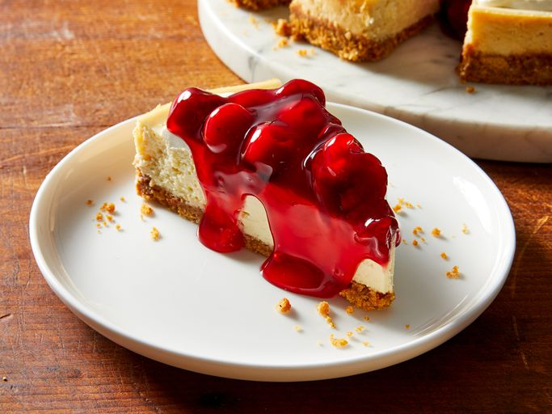

Cheesecake Recipe

Description
This condensed milk cheesecake has a creamy and smooth texture. Top with a raspberry spread or serve plain.
Ingredients
- 1 and 1/4 cups graham cracker crumbs
- 1/3 cup butter or margarine, melted
- 1/4 cup sugar
- 2 (8 ounce) packages cream cheese, softened
- 1 (14 ounce) can EAGLE BRAND® Sweetened Condensed Milk
- 3 large eggs
- 1/4 cup lemon juice
- 1 (8 ounce) container sour cream, at room temperature
- 1 (21 ounce) can cherry pie filling (Optional)
Directions
- Gather all ingredients.
- Preheat the oven to 300 degrees F (150 degrees C).
- Combine graham cracker crumbs, butter, and sugar in a large bowl; mix well.
- Press mixture firmly onto the bottom of a 9-inch springform pan.
- Beat cream cheese in a large bowl with an electric mixer on medium speed until fluffy.
- Gradually beat in condensed milk until smooth.
- Add eggs and lemon juice; mix well. Pour into the prepared pan.
- Bake in the preheated oven until center is set, 50 to 55 minutes.
- Remove cheesecake from the oven; top with sour cream.
- Continue baking until sour cream sets, about 5 minutes.
- Cool cheesecake at room temperature for 1 hour, then chill in the refrigerator for at least 4 hours.
Garnish with pie filling before serving. Store leftovers covered in the refrigerator.